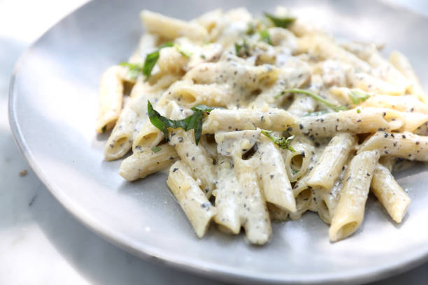

PASTA WITH SAUSE
LETS LEARN HOW TO MAKE PASTA WITH MUSHROOM SAUSE
INGREDENTS
PASTA
SAUSE
INSTRUCTIONS
PASTA
- FILL A POT WITH WATER.
- BOIL WATER.
- ONCE WATER IS BOILING ADD PASTA.
- WHEN PASTA IS COOKED STRAIN WATER OUT.
SAUCE
- FRY GROUNG BEEF IN A SECOND POT.
- CHOP ONIONS AND FRY WITH THE GROUND BEEF.
- ONCE GROUND BEEF IS FULLY COOKED ADD MUSHROOMS.
- ADD MUSHROOM SOUP AND WATER.
- ADD SPICES TO TASTE AND MIX.
- ADD SAUSE TO PASTA.
- EAT.